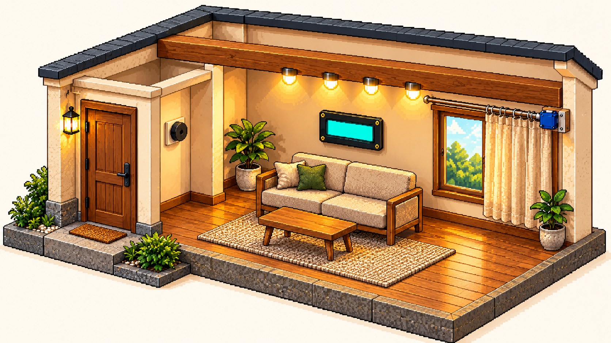

현관등
LED · D5상태 미확인
슬라이더를 놓으면 적용됩니다. 0보다 크면 켜집니다.
CLIMATE TECH · CONNECTED LIVING
빛과 커튼, 그리고 일상의 편리함을 직접 제어해 보세요.
슬라이더를 놓으면 적용됩니다. 0보다 크면 켜집니다.
켜기는 선택한 RGB 색상을 전송합니다.
기구의 끝점·이동 방향을 확인한 후 조작하세요.
31–10,000Hz · 1–60,000ms · 보드에서 자동 종료
각 줄 ASCII 영문·숫자·기호 최대 16자. 한글 및 | 사용 불가.
YOUR LITTLE CONNECTED HOME

이미지에는 원래 켜진 조명과 반쯤 열린 커튼이 그려져 있습니다. 겹쳐지는 효과는 보드의 설정 상태를 표현하며, 실제 밝기·커튼 위치·소리를 측정한 결과가 아닙니다. 연결 해제 시 효과를 숨깁니다.
현관등: 왼쪽 문 옆(D5) · 부저: 현관 안쪽 벽(D6) · 천장등: 보 아래 4개(D7) · 커튼: 오른쪽 창문(D8) · LCD: 소파 위 벽(A4/A5, 0x27).
출력장치 펌웨어를 UNO에 업로드하고 IDE 시리얼 모니터를 닫으세요. 데이터 USB 케이블 연결 → Arduino 연결 → 해당 포트 선택 → 안정화 및 STATUS 확인 후 제어하세요.
귀가: 현관등·따뜻한 천장등 켜기, 커튼 열기, 알람 정지, 환영 문구.
외출: 조명 끄기, 커튼 닫기, 알람 정지, 외출 문구.
절전: 현관등 끄기, 천장등 밝기 40, 커튼 열기, 알람 정지, 절전 문구.
아두이노 연결을 기다리고 있습니다.